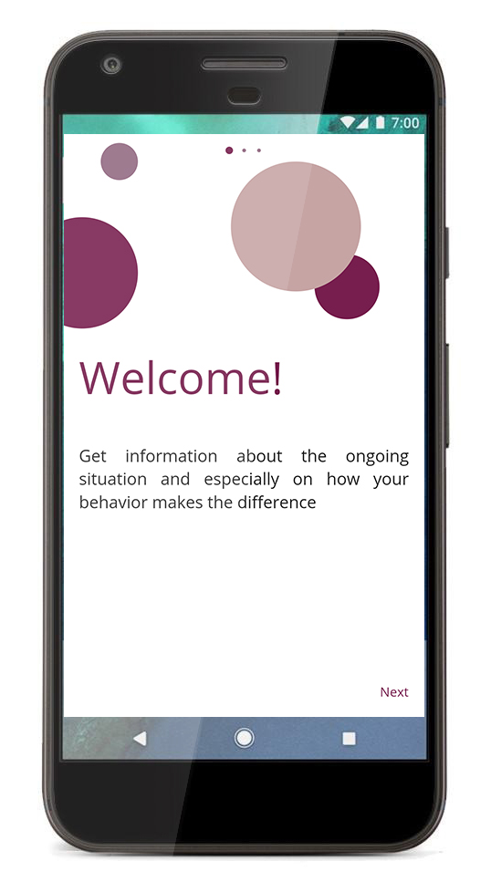
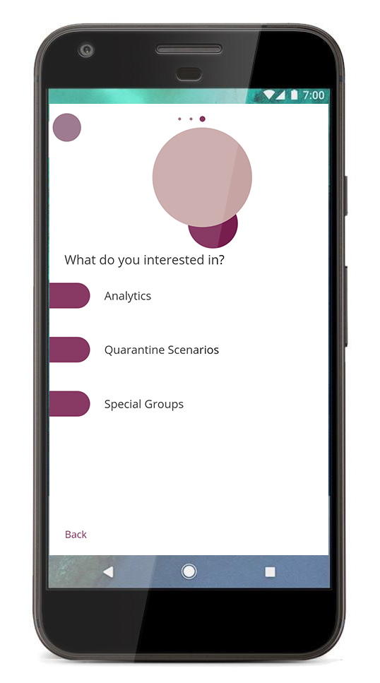
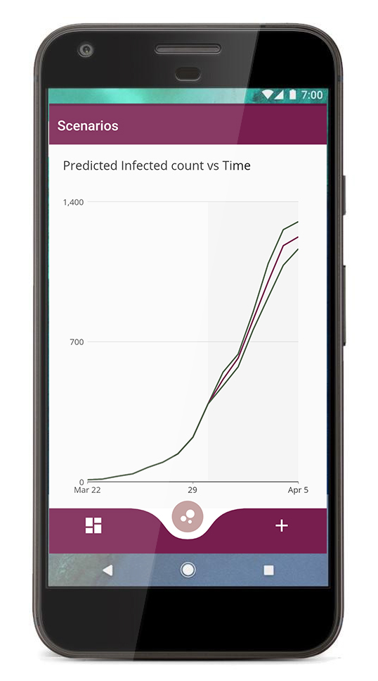
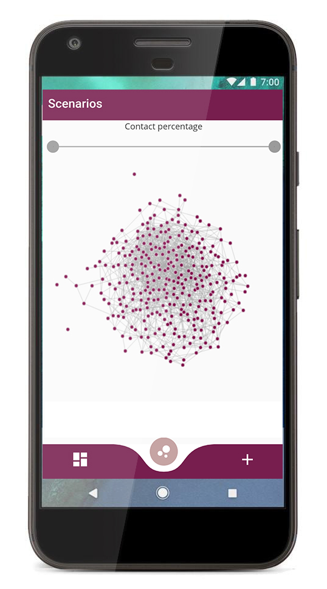

Come learn more about the scenario of the COVID-19 in your world with easy click and watch beautiful animated graphs regarding your
country or many the whole world.
You can also take quizzes to see how well prepared you are to face this situation.




Explore more from nightingale using our mobile app. Keep all the datasets in your pocket. With graphical illustrations of cluster
graphs, this will be a whole new experience. Try it now!